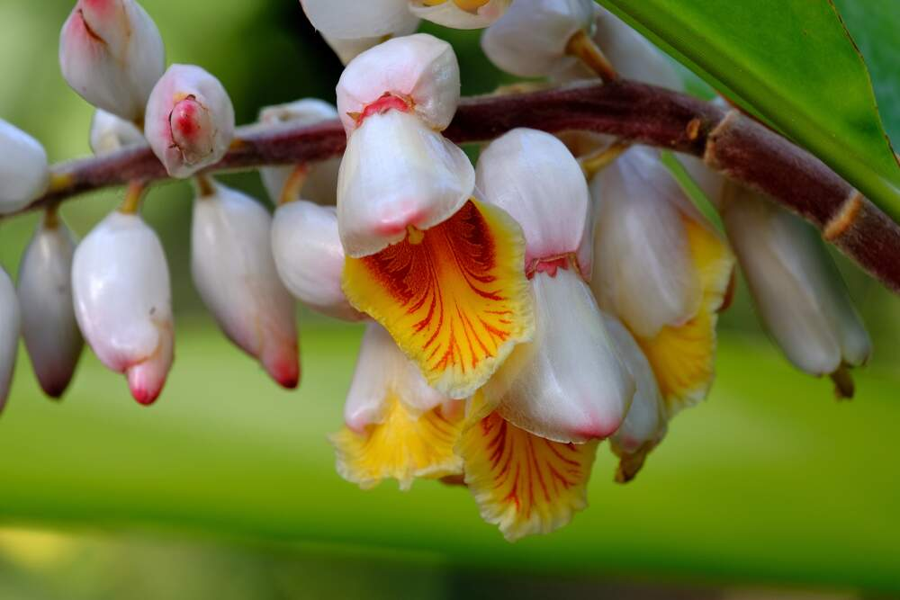

As Plantas Medicinais foram identificadas e usadas ao longo da história da humanidade, pois têm a capacidade de sintetizar uma grande variedade de compostos químicos que são utilizados para desempenhar funções biológicas importantes e para a defesa contra o ataque de predadores, tais como insetos, fungos, herbívoros e mamíferos.
É possível chamar de plantas medicinais aquelas que possuem características que ajudam no tratamento de doenças ou que melhoram as condições de saúde das pessoas.
O uso de plantas como medicamentos antecede a história humana escrita. Muitas das ervas e temperos usados por seres humanos na comida também produzem compostos medicinais úteis. O uso de ervas e especiarias na culinária desenvolveu-se em parte como uma resposta à ameaça de agentes patógenos, de origem alimentar.
Os compostos químicos em plantas mediam seus efeitos sobre o corpo humano através de processos idênticos aos já bem compreendidos compostos químicos de drogas convencionais, assim os medicamentos fitoterápicos não diferem muito de drogas convencionais em termos de funcionamento. Isto permite que os medicamentos à base de plantas possam ser tão eficazes como os convencionais, mas também podem ter o mesmo potencial para causar efeitos secundários nocivos.
O que são Plantas Medicinais?
As plantas medicinais são conhecidas por serem ricas em princípios ativos que ajudam a tratar
determinados problemas de saúde. No início do século 21, cerca de 11% dos 252
medicamentos considerados básicos e essenciais pela Organização Mundial da Saúde eram
exclusivamente de origem vegetal.
Muitos medicamentos contêm ingredientes derivados das plantas medicinais, afinal, essas plantas são ricas em nutrientes, vitaminas e outras substâncias muito benéficas para o corpo.
Para que uma planta medicinal seja eficaz, é preciso ingerir quantidades específicas e bem controladas, por isso, não deixe de procurar ajuda profissional caso esteja buscando tratar alguma doença.
Algumas dessas plantas são comumente utilizadas para fazer chás ou temperar as refeições. No entanto, seu consumo deve ser moderado e, em determinados casos, como gravidez, antes de consumir, deve-se obter orientação médica
Plantas Medicinais mais populares e seus benefícios:
Boldo: alivia sintomas leves de náusea;
Aloe Vera: auxilia na hidratação dos cabelos e também no tratamento de queimaduras leves;
Erva-doce: ajuda na digestão e eliminação de gases;
Hortelã: com ação nas vias respiratórias, atua como expectorante e também age contra a má digestão;
Capim Cidreira: calmante e auxiliar na má digestão;
Camomila: atua como calmante, auxiliar na má digestão;
Arnica: ajuda no tratamento de cicatrização;
Colônia: possui efeito sedativo;

Cavalinha: ação diurética;
Carqueja: combate a má digestão;
Eucalipto: auxilia as vias respiratórias com ação expectorante.
Plantas Medicinais mais populares em Mato Grosso do Sul (MS) e seus benefícios:
Guaco: utilizado contra gripe, rouquidão, infecção na garganta, tosse, bronquite;
Quebra-Pedra: utilizada em chás caseiros para dissolver cálculos;
Gengibre: auxilia na redução do apetite e reduz a absorção de gorduras, o que contribui para o emagrecimento.